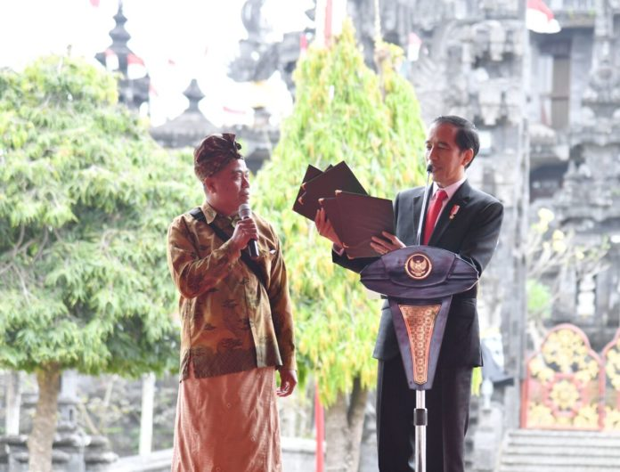
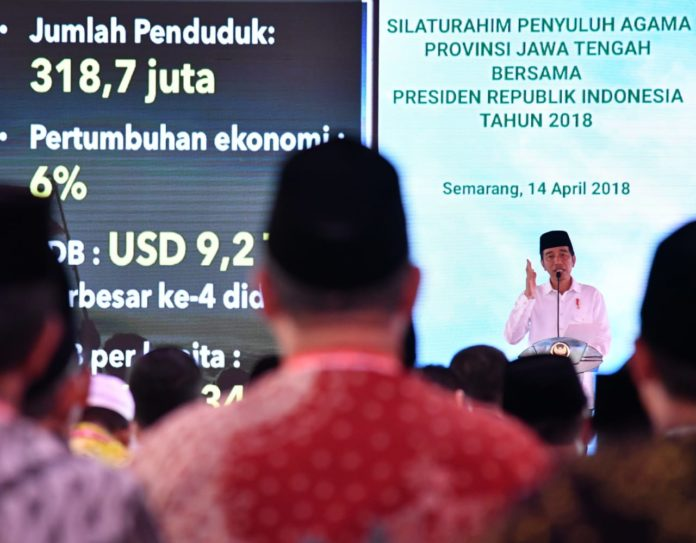
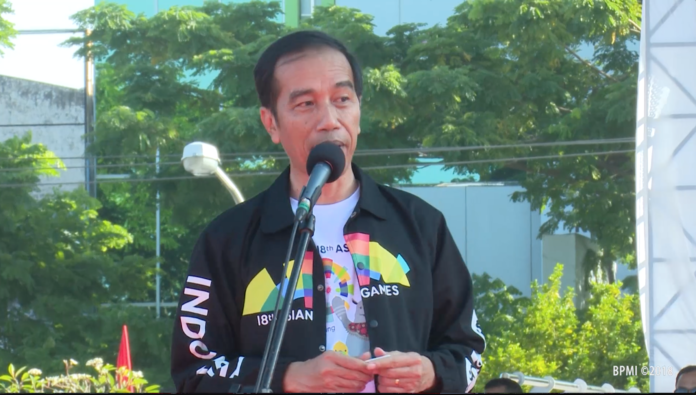

Blusukan

PULAU BALI Setelah menghadiri Rapimnas ke-1 Partai Hanura Tahun 2017, Presiden Joko Widodo menyerahkan sertifikat hak atas tanah program strategis nasional di Lapangan Renon, Kota Denpasar, Provinsi Bali. Dalam kesempatan tersebut, Presiden menyerahkan 5.903 sertifikat kepada warga Bali, Jumat 4 Agustus 2017. Lebih lanjut Presiden menjelaskan bahwa di Indonesia terdapat 126 juta bidang yang harus disertifikatkan, namun yang diberikan baru 46 juta bidang. Tahun ini, pemerintah menargetkan akan membagikan 200.000 sertifikat dan tahun 2019 semua tanah di Bali sudah bersertifikat..

PULAU JAWA Di awal sambutannya, Presiden memperoleh informasi bahwa penyuluh agama se-Jawa Tengah yang hadir sebanyak 5.711 orang, baik dari perwakilan agama Islam, Kristen, Katolik, Hindu, Buddha, Konghucu. “Terima kasih atas partisipasinya, kerelaannya dan keikhlasannya. Bapak, ibu, saudara sekalian telah ikut berperan menjaga persatuan dan kesatuan,” kata Presiden. “Luar biasa, karena saudara-saudara telah memberikan pengorbanan kepada negara, bangsa dan agama. Luar biasa atas komitmen Saudara memperkuat kerukunan bangsa serta luar biasa atas komitmen Saudara untuk memperkokoh NKRI memperkokoh Pancasila serta memperkokoh Bhinneka Tunggal Ika,” ucapnya.

PULAU SUMATRA Semangat untuk bekerja keras dalam membangun bangsa terus digelorakan oleh Presiden Joko Widodo. Hal itu disampaikan Presiden dalam berbagai kesempatan, termasuk ketika memberikan sambutan di hadapan ribuan orang di Lapangan Karebosi, Makassar, Sulawesi Selatan, Minggu, 29 Juli 2018. “Marilah kita isi negara ini dengan militansi yang tinggi untuk pembangunan, bekerja keras, produktivitas kita kerjakan bersama-sama,” kata Presiden selepas acara Jalan Sehat Sahabat Rakyat Indonesia untuk Asian Games 2018.